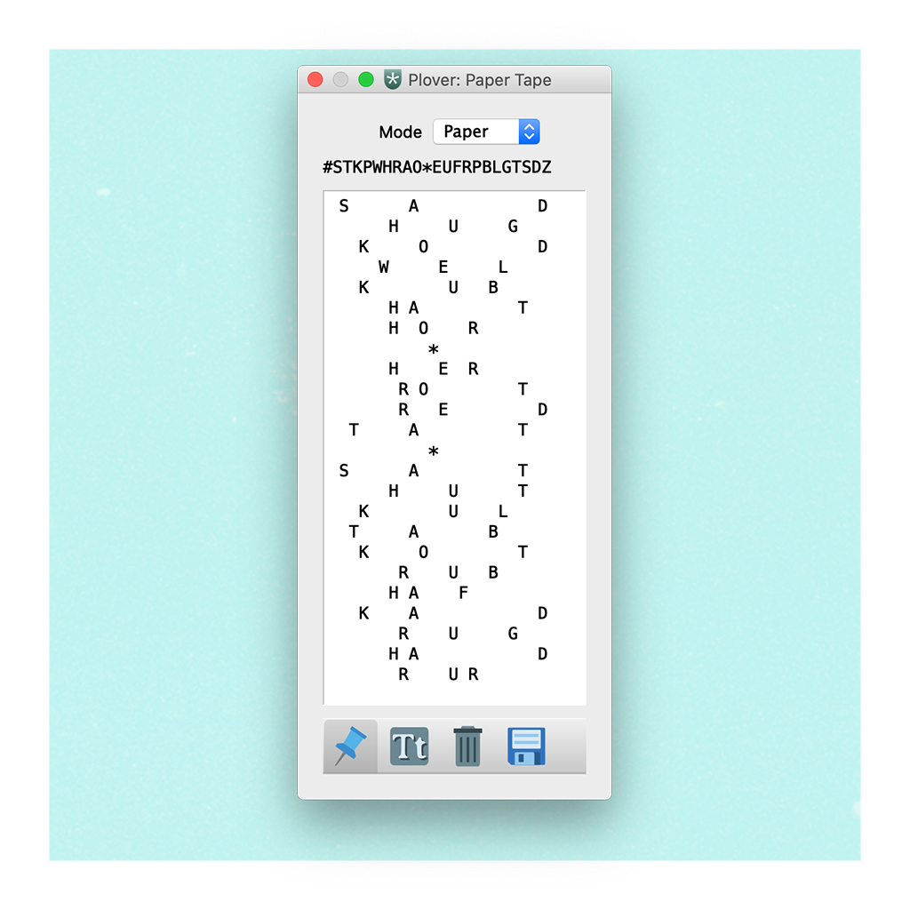

Stenography: A Piano for Speaking With
November 2020 – advance copy.

The ErgoDox EZ. (As of writing, I’m still waiting for mine to arrive.) It allows as many keys as the user strikes simultaneously to be registered by the computer. It’s a little like a piano, and, as we’ll see, a crucial feature in stenography.
Table of contents
1. Thinking and typing
2. Performing words
3. My experience
1. Thinking and typing
After a few months of playing the piano (or learning any instrument, for that matter), something almost magical starts to happen. When you sit at the keys with the intention of playing something that conveys what you are thinking or how you are feeling, your fingers take the lead, finding the chords, notes, and passages that they need for self-expression as directed by the unconsciousness. Skirting explicit technical frustrations that are often the byproducts of preparing music (sight-reading can be the absolute worst, for instance), one’s performance becomes implicit, confidently rhythmic, and in step with the flow of time: a liberating act.
This phenomenon has been codified in a social setting through the genre of jazz, in which dialogue flows without barrier or impedance between each musician, who respond to one another using riffs, chords, beats, and motifs. This would be a wonderful primary form of communication, were it not for the properties of society that music cannot cater for, such as the sharing of data and the construction of logical facts and arguments.
Many will find a comparison between this description of autonomous musical performance and their own evenings spent chatting at the bar. For these people, speech does fall under that category of “natural expression”: words are called to mind with little effort, and communicated to others with ease. But for others, such an act is not so easy. Some might find conversing to be a conscious and continually exhausting process where a supply of responses and phrases can never be taken for granted – even to the point where they simply must stop speaking and go non-verbal for a little while. Others, for various reasons, have little or no capacity to talk at all. The human ability to communicate verbally lies across a wide and diverse spectrum!
So, what alternatives come to mind? There are various tools that allow their users to convey language without voice, such as eye-tracking software that observes one’s eye-contact with virtual on-screen letters – but it’s the QWERTY keyboard that remains the most ubiquitous amongst users of English. We type when we can’t speak, or when it is more effective, efficient, or convenient not to do so; typing is an ability that many of us have, and it’s a skill that a lot of us have grown up with.
There’s something which separates the act of using a keyboard to communicate from the subconscious piano-playing state that we mentioned above. Even as I type out this article, I’m having to think about where my fingers are on the keyboard, and where they will need to be to stroke the next character. Typing is certainly faster than it used to be, but it’s still – and will always remain, to some extent – conscious. It is the equivalent of transcribing musical notes rather than just playing them. This mechanism works effectively when we are writing without any time constraints, or communicating at a similar pace to the other participants with whom we are in dialogue (a group chat, for instance). However, if there is any consistent and substantial discrepancy in pace, such as a typing-only participant contributing to a primarily verbal conversation, the inability to follow the rhythm of the conversation can be rather frustrating!
2 Performing words

The stenotype layout. Source: Art of Chording.
I’m sure that many of you saw the popular TikTok recording of a court reporter describing how stenographers are able to write so quickly, and what their jobs entail. (Alas, I didn’t save the video, and can’t find it anymore. Write me if you dig it up!) I was intrigued: it had never explicitly occurred to me that court proceedings have to be transcribed; not just by “lay-typists”, but by specialized professionals who can keep pace with participants whilst maintaining precision and accuracy. The practice of this profession revolves around the stenotype machine, a keyboard which is quite different to the one we might find on our computers or phones.
Here we have two banks of consonants separated by an asterisk key, with not-quite-every-vowel at the bottom and a big ‘S’ to the left. What’s up with those? It turns out that these keys don’t represent letters; they represent sounds. ‘K’, for instance, represents the sound of both the ‘K’ in ‘Kevin’ and the ‘C’ in ‘coffee’. One of the other big differences between standard typing and stenography is that all of the sounds in a syllable (called a chord) are typed simultaneously, which accounts for the seemingly strange layout of the letters. To type ‘tough’, for instance, one would strike the ‘T’, ‘U’, and ‘F’ keys simultaneously; ‘pear’ would be ‘PAER’ (the ‘AE’ making the ‘e’ sound in ‘pear’, ‘fear’, and so on). Typing in a single stroke (rather than typing each consecutive letter) works because the keyboard is read from left-to-right, which is why stroking ‘–UFT’ (everything after the hyphen is on the right side of the keyboard) instead of ‘TUF’ will render the quite meaningless ‘UFT’. Consonant and vowel sounds not on the keyboard are typed using a combination of existing letters; ‘bean’, for instance, would be written as ‘PWAEPB’, where ‘PW’ is a ‘b’ sound, ‘AE’ is an ‘ee’ sound, and ‘PB’ is an ‘n’ sound.
In this manner, stenographers can type at hurtling speeds and easily keep up with even the faster and more passionate speakers. In fact, 225 words-per-minute (WPM) is the baseline for certified court reporting; the average typing speed sits at around 40 WPM, with faster typists hovering at around 70WPM.

My ‘paper tape’ from a practice session. The asterisks are where I’ve deleted a word.
With the technical details aside, we can start to think about this practice in a more abstract sense again. The relationship between stenography and piano performance is (please excuse the pun) striking. The typist “plays” to the rhythm of the speakers, pressing key combinations to make notes which add up to produce phrases; it seems meaningful that these groups of notes are even called “chords”! The user no longer has to recall the spelling of words during the brain’s cycle of activity in the typing process; they can instead follow along with an internal dialogue, unconsciously converting imagined sounds into typing sequences in much the same way that a musical instrument is played. But there’s a major caveat that stems from this comparison. Much like learning an instrument, the evidence and practitioners’ anecdotes point to the sheer amount of time needed to get to this level; there’s a reason that there are professional schools that provide years-long court reporting certification programs!
3. My experience